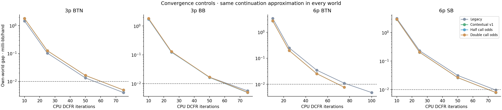
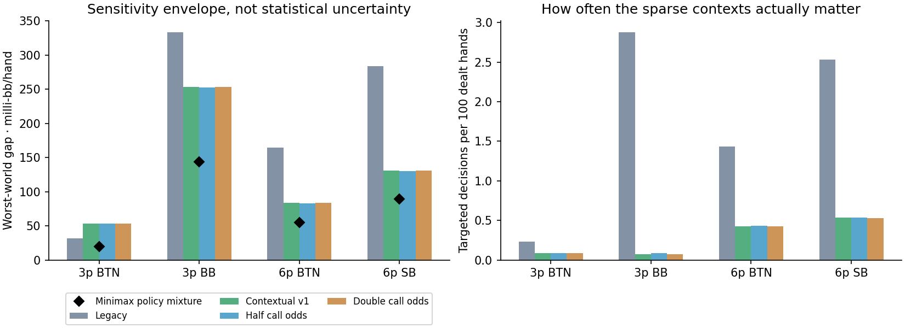
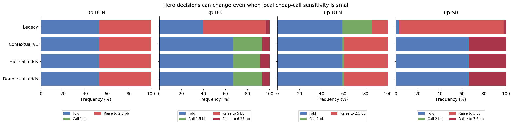

Actual CPU preflop solves, cross-evaluated against four fixed opponent worlds. Models, live sessions and saved profiles remain unchanged.
The halved/doubled call-odds worlds are explicit stress assumptions, not statistical confidence bounds. All EVs use the current continuation approximation; they are not measured poker win rates.
Research progress · Method and findings · Summary metrics


